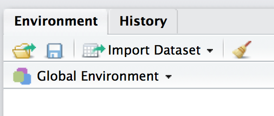
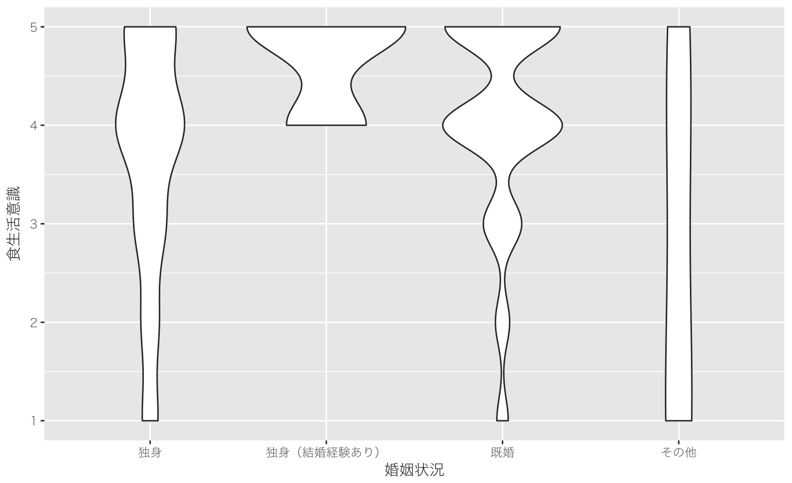

データの読み込み方
- 便利な「プロジェクト」

- RStudio の右側にある。
- フォルダ名には日本語を使わない。
- 分析データをプロジェクトのフォルダに入れておく。
- その他，いろいろ入れておくと便利。
Hikaru GOTO
1. 統計学エンドユーザーが知っておいたほうがいい手法を身につける。
2. 量的分析を使った研究が理解できるようになる。
3. Rを使った量的分析ができるようになる。
install.packages("car")
library(car)library(car) # 全部半角英数。スペルミスに注意。


str(iris)## 'data.frame': 150 obs. of 5 variables:
## $ Sepal.Length: num 5.1 4.9 4.7 4.6 5 5.4 4.6 5 4.4 4.9 ...
## $ Sepal.Width : num 3.5 3 3.2 3.1 3.6 3.9 3.4 3.4 2.9 3.1 ...
## $ Petal.Length: num 1.4 1.4 1.3 1.5 1.4 1.7 1.4 1.5 1.4 1.5 ...
## $ Petal.Width : num 0.2 0.2 0.2 0.2 0.2 0.4 0.3 0.2 0.2 0.1 ...
## $ Species : Factor w/ 3 levels "setosa","versicolor",..: 1 1 1 1 1 1 1 1 1 1 ...str(Titanic)## table [1:4, 1:2, 1:2, 1:2] 0 0 35 0 0 0 17 0 118 154 ...
## - attr(*, "dimnames")=List of 4
## ..$ Class : chr [1:4] "1st" "2nd" "3rd" "Crew"
## ..$ Sex : chr [1:2] "Male" "Female"
## ..$ Age : chr [1:2] "Child" "Adult"
## ..$ Survived: chr [1:2] "No" "Yes"str(reidai)## Classes 'tbl_df', 'tbl' and 'data.frame': 400 obs. of 13 variables:
## $ id : int 1 2 3 4 5 6 7 8 9 10 ...
## $ nendai : chr "10dai" "10dai" "10dai" "10dai" ...
## $ sex : int 1 1 1 1 1 1 1 1 1 1 ...
## $ age : int 19 18 16 16 16 17 17 19 19 17 ...
## $ income : int 1 12 12 12 5 1 12 1 12 1 ...
## $ marriage : int 1 1 1 1 1 1 1 1 1 1 ...
## $ family : int 1 2 2 2 2 2 2 2 2 2 ...
## $ syoku_kenko: int 4 2 3 4 3 5 2 4 3 3 ...
## $ tyoshoku : int 4 3 4 4 4 4 2 2 1 4 ...
## $ gaisyoku1 : int 3 4 3 3 3 3 4 4 3 2 ...
## $ gaisyoku2 : int 4 5 4 4 4 5 5 4 5 3 ...
## $ jitaku_cook: int 4 3 0 3 0 5 0 1 0 2 ...
## $ tokui : int 3 2 NA 2 NA 1 NA NA NA 2 ...
## - attr(*, "spec")=List of 2
## ..$ cols :List of 13
## .. ..$ id : list()
## .. .. ..- attr(*, "class")= chr "collector_integer" "collector"
## .. ..$ nendai : list()
## .. .. ..- attr(*, "class")= chr "collector_character" "collector"
## .. ..$ sex : list()
## .. .. ..- attr(*, "class")= chr "collector_integer" "collector"
## .. ..$ age : list()
## .. .. ..- attr(*, "class")= chr "collector_integer" "collector"
## .. ..$ income : list()
## .. .. ..- attr(*, "class")= chr "collector_integer" "collector"
## .. ..$ marriage : list()
## .. .. ..- attr(*, "class")= chr "collector_integer" "collector"
## .. ..$ family : list()
## .. .. ..- attr(*, "class")= chr "collector_integer" "collector"
## .. ..$ syoku_kenko: list()
## .. .. ..- attr(*, "class")= chr "collector_integer" "collector"
## .. ..$ tyoshoku : list()
## .. .. ..- attr(*, "class")= chr "collector_integer" "collector"
## .. ..$ gaisyoku1 : list()
## .. .. ..- attr(*, "class")= chr "collector_integer" "collector"
## .. ..$ gaisyoku2 : list()
## .. .. ..- attr(*, "class")= chr "collector_integer" "collector"
## .. ..$ jitaku_cook: list()
## .. .. ..- attr(*, "class")= chr "collector_integer" "collector"
## .. ..$ tokui : list()
## .. .. ..- attr(*, "class")= chr "collector_integer" "collector"
## ..$ default: list()
## .. ..- attr(*, "class")= chr "collector_guess" "collector"
## ..- attr(*, "class")= chr "col_spec"head(reidai)head(reidai, 3)## # A tibble: 3 × 13
## id nendai sex age income marriage family syoku_kenko tyoshoku
## <int> <chr> <int> <int> <int> <int> <int> <int> <int>
## 1 1 10dai 1 19 1 1 1 4 4
## 2 2 10dai 1 18 12 1 2 2 3
## 3 3 10dai 1 16 12 1 2 3 4
## # ... with 4 more variables: gaisyoku1 <int>, gaisyoku2 <int>,
## # jitaku_cook <int>, tokui <int>ウソです。
応答（従属）変数＝年収，店舗の売り上げ
説明（独立）変数＝業種（X, Y, Z），立地（A, B, C, D）
業種Xの平均年収 ～ 全業種の平均年収＋業種Xの効果＋誤差X（残差）
業種Yの平均年収 ～ 全業種の平均年収＋業種Yの効果＋誤差Y（残差）
業種Zの平均年収 ～ 全業種の平均年収＋業種Zの効果＋誤差Z（残差）
応答変数は食生活の意識，説明変数は婚姻状況
res = lm(syoku_kenko ~ factor(marriage), data = reidai)
anova(res)## Analysis of Variance Table
##
## Response: syoku_kenko
## Df Sum Sq Mean Sq F value Pr(>F)
## factor(marriage) 3 25.06 8.3542 6.6708 0.0002106 ***
## Residuals 396 495.93 1.2524
## ---
## Signif. codes: 0 '***' 0.001 '**' 0.01 '*' 0.05 '.' 0.1 ' ' 1「食生活の健康意識が婚姻状況によって異なるかを調べるために一要因の分散分析を行った。その結果、5%水準で有意であった（F(3, 396) = 6.67, p < 0.01）。」(“中部大学小塩研究室のページ,” n.d.)
res = lm(syoku_kenko ~ marriage, data = reidai)
anova(res)## Analysis of Variance Table
##
## Response: syoku_kenko
## Df Sum Sq Mean Sq F value Pr(>F)
## marriage 1 10.6 10.6017 8.2671 0.004254 **
## Residuals 398 510.4 1.2824
## ---
## Signif. codes: 0 '***' 0.001 '**' 0.01 '*' 0.05 '.' 0.1 ' ' 1
res = lm(syoku_kenko ~ as.factor(marriage), data = reidai)
anova(res)res = lm(syoku_kenko ~ factor(marriage), data = reidai)
anova(res)
res1 = lm(gaisyoku1 ~ factor(marriage), data = reidai)
anova(res1)## Analysis of Variance Table
##
## Response: gaisyoku1
## Df Sum Sq Mean Sq F value Pr(>F)
## factor(marriage) 3 23.86 7.9534 4.2728 0.005506 **
## Residuals 396 737.12 1.8614
## ---
## Signif. codes: 0 '***' 0.001 '**' 0.01 '*' 0.05 '.' 0.1 ' ' 1res2 = lm(jitaku_cook ~ factor(family), data = reidai)
anova(res2)## Analysis of Variance Table
##
## Response: jitaku_cook
## Df Sum Sq Mean Sq F value Pr(>F)
## factor(family) 2 6.96 3.4799 0.8691 0.4201
## Residuals 397 1589.54 4.0039res3 = lm(syoku_kenko ~ factor(nendai), data = reidai)
anova(res3)## Analysis of Variance Table
##
## Response: syoku_kenko
## Df Sum Sq Mean Sq F value Pr(>F)
## factor(nendai) 5 44.56 8.9114 7.3694 1.277e-06 ***
## Residuals 394 476.44 1.2092
## ---
## Signif. codes: 0 '***' 0.001 '**' 0.01 '*' 0.05 '.' 0.1 ' ' 1tajyu = aov(syoku_kenko ~ factor(nendai), data = reidai)
TukeyHSD(tajyu)## Tukey multiple comparisons of means
## 95% family-wise confidence level
##
## Fit: aov(formula = syoku_kenko ~ factor(nendai), data = reidai)
##
## $`factor(nendai)`
## diff lwr upr p adj
## 20dai-10dai 0.01666667 -0.55829452 0.5916279 0.9999994
## 30dai-10dai 0.05714286 -0.49690361 0.6111893 0.9996974
## 40dai-10dai 0.11428571 -0.43976075 0.6683322 0.9916230
## 50dai-10dai 0.50000000 -0.05404646 1.0540465 0.1034992
## 60dai-10dai 0.90000000 0.34595354 1.4540465 0.0000657
## 30dai-20dai 0.04047619 -0.51357027 0.5945227 0.9999447
## 40dai-20dai 0.09761905 -0.45642742 0.6516655 0.9959881
## 50dai-20dai 0.48333333 -0.07071313 1.0373798 0.1270497
## 60dai-20dai 0.88333333 0.32928687 1.4373798 0.0000969
## 40dai-30dai 0.05714286 -0.47516777 0.5894535 0.9996319
## 50dai-30dai 0.44285714 -0.08945348 0.9751678 0.1648768
## 60dai-30dai 0.84285714 0.31054652 1.3751678 0.0001115
## 50dai-40dai 0.38571429 -0.14659634 0.9180249 0.3025057
## 60dai-40dai 0.78571429 0.25340366 1.3180249 0.0004206
## 60dai-50dai 0.40000000 -0.13231062 0.9323106 0.2630214「食生活の健康意識が年齢層によって異なるか検討するため一要因の分散分析を行った。その結果、5%水準で有意であった（F(5, 394) = 7.37, p <0.01）。さらに Tukey の HSD 法（5％水準）による多重比較を行ったところ，60代と10代，60代と20代，60代と30代，60代と40代の間でいずれも60代の平均値が有意に高かった。」
tapply(reidai$syoku_kenko, reidai$nendai, mean)## 10dai 20dai 30dai 40dai 50dai 60dai
## 3.600000 3.616667 3.657143 3.714286 4.100000 4.500000tajyu2 = aov(gaisyoku1 ~ factor(marriage), data = reidai)
TukeyHSD(tajyu2)## Tukey multiple comparisons of means
## 95% family-wise confidence level
##
## Fit: aov(formula = gaisyoku1 ~ factor(marriage), data = reidai)
##
## $`factor(marriage)`
## diff lwr upr p adj
## 2-1 -0.61770245 -1.8204774 0.5850725 0.5475303
## 3-1 -0.03357546 -0.3927413 0.3255903 0.9950611
## 4-1 -2.31214689 -4.0918946 -0.5323992 0.0048616
## 3-2 0.58412698 -0.6140664 1.7823204 0.5904297
## 4-2 -1.69444444 -3.8096677 0.4207788 0.1658877
## 4-3 -2.27857143 -4.0552261 -0.5019168 0.0056222中部大学小塩研究室のページ. (n.d.). Retrieved April 8, 2017, from http://psy.isc.chubu.ac.jp/~oshiolab/teaching_folder/data_b/04/04.html
嶋田・阿部. (2017). Rで学ぶ統計学入門. 東京化学同人.
自炊と健康意識に関するアンケート調査|マーケティングリサーチ・市場調査のマーシュ. (n.d.). Retrieved April 8, 2017, from https://www.marsh-research.co.jp/examine/2809jisui.html
馬場. (2015). 平均・分散から始める一般化線形モデル入門. プレアデス出版.